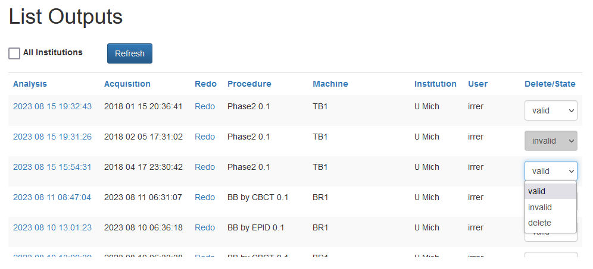

The Results page provides a list of all test results. This is the primary mechanism for accessing reports.
By default, data is sorted by processing date, but clicking on the column headers will sort by that column.
By default, data is marked as valid. In some cases, data is later found to be invalid, due to errors in delivery or other causes. Invalid data can visually skew charts and subsequent analysis. Marking a result as invalid means that its data will not show up in historical (data over time) charts elsewhere in AQA, and it will not be included in CSV downloads.
After marking a result as valid or invalid, the change will be reflected immediately in history charts upon the next web page refresh. For CSV downloads, the change will not be reflected until after the CSV files are regenerated.
Marking results as valid or invalid can be un-done by changing the status again.
The user also has the option of deleting data. Clicking delete will first ask for a confirmation. If confirmed, the data will be removed from the system. This operation can not be un-done, however the uer may re-upload the data at a future date.